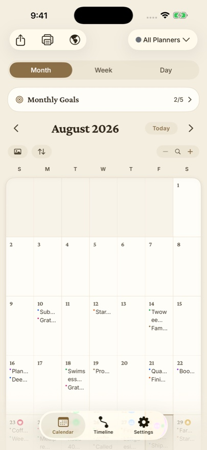

Day One is the best-known journal app on Apple platforms, and it earned that reputation: it's polished, deep, and has been around for over a decade. Dayleaf is the challenger — a journal that lives on a calendar instead of a feed, sold as a one-time purchase instead of a subscription. This page lays out the real differences so you can pick the right one for how you journal.
The comparison at a glance
| Dayleaf | Day One | |
|---|---|---|
| Pricing | $14.99 once, yours forever (or $0.99/mo · $9.99/yr if you prefer) | Premium subscription, about $50/year — roughly $250 over five years |
| Free tier | Unlimited entries, all views, search, import, iCloud backup, 3 planners | Single journal, one photo per entry, no sync across devices |
| Core layout | Calendar-first — entries live on month/week/day pages, like a paper planner | Timeline-first — a scrolling feed of entries, calendar secondary |
| Platforms | iPhone, iPad, Mac, Apple Watch | iPhone, iPad, Mac, Apple Watch, plus Android and web |
| Goals & habits | Built in — daily, weekly, and monthly goals on the same pages as your entries | Not a focus; journaling only |
| Voice | Dictate from the wrist; voice notes transcribed into text entries; import Apple Voice Memos | Audio recording attached to entries (transcription on newer plans) |
| Photos | Photos on entries; the editor suggests your photos from that day automatically | Excellent photo support, multiple per entry |
| Switching cost | Imports your full Day One export free — entries, photos, videos, audio | Exports JSON/ZIP (that's what Dayleaf imports) |
| Encryption | Local-first, iCloud backup (standard Apple encryption) | End-to-end encryption option on synced journals |
| Templates & metadata | Stickers, per-planner styles, themes | Templates, tags, weather/location metadata — deeper here |

The philosophical difference
Most journal apps, Day One included, are organized like social feeds: newest entry on top, scroll down into the past. Dayleaf is organized like the paper planner on your grandmother's desk: months and weeks are pages, and your writing lives on the day it happened. You watch a month fill up as you write, which turns the calendar itself into a habit tracker. Neither approach is wrong — but they feel completely different day to day, and most people know within a week which one their brain prefers.
The pricing difference
Day One moved to a subscription model years ago, and its Premium price has climbed. Journaling is a decades-long practice — at ~$50/year, ten years of Day One costs around $500. Dayleaf's position is that your journal shouldn't be rented: $14.99 once buys every Pro feature permanently, on every device, and the subscription options exist only for people who prefer to pay that way. And the things that protect your data — import, export, iCloud backup — are free forever, deliberately, so you're never locked in or out.
Where Day One is genuinely better
- Android and web apps. Dayleaf is Apple-only. If you're on a mixed household of devices, Day One wins outright.
- End-to-end encryption. Day One offers E2E-encrypted journals; Dayleaf relies on Apple's standard iCloud protections.
- Depth of metadata. Weather, location, activity data, tags, templates — Day One has had a decade to build these out.
Where Dayleaf is genuinely better
- You own it. One purchase, no recurring bill, no features held hostage by a lapsed subscription.
- The calendar is the journal. Goals, entries, and photos on the same monthly page — if you think in weeks and months, this is the layout you've been looking for.
- Zero-friction capture. Open the watch app and it starts taking your entry with no taps at all; voice notes become searchable text automatically.
- Free where it matters. Unlimited entries, search, backup, and full Day One import cost nothing.
Try it without burning your boats
Because Dayleaf imports the complete Day One export (entries, photos, videos, audio) for free, the sensible move is to keep Day One installed, import everything into Dayleaf, and live with both for a couple of weeks. Our step-by-step guide: How to move your Day One journal to Dayleaf.
Choose Day One if…
you need Android or web access, want end-to-end encryption, or lean on templates and rich metadata. It's a mature, excellent app.
Choose Dayleaf if…
you live on Apple devices, think in calendars rather than feeds, want goals and journaling in one place, and would rather pay $14.99 once than $50 every year.